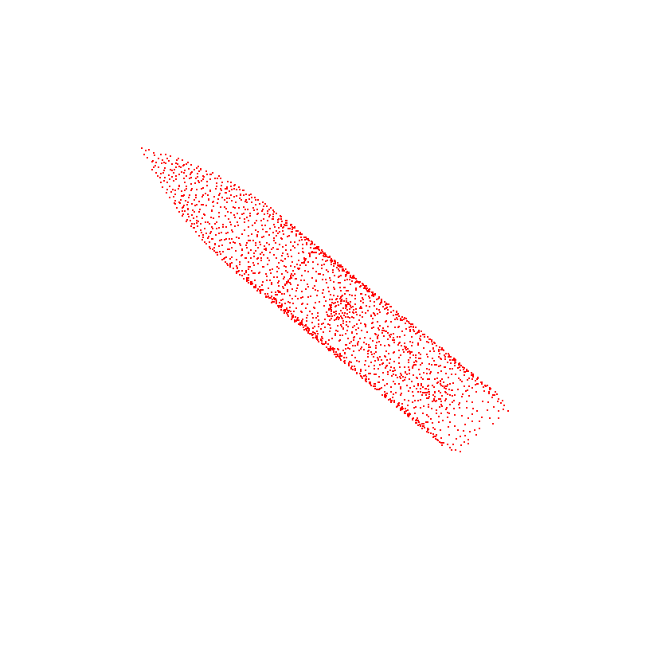

We present the first method capable of photorealistically reconstructing a non-rigidly deforming scene using photos/videos captured casually from mobile phones.
Our approach augments neural radiance fields (NeRF) by optimizing an additional continuous volumetric deformation field that warps each observed point into a canonical 5D NeRF. We observe that these NeRF-like deformation fields are prone to local minima, and propose a coarse-to-fine optimization method for coordinate-based models that allows for more robust optimization. By adapting principles from geometry processing and physical simulation to NeRF-like models, we propose an elastic regularization of the deformation field that further improves robustness.
We show that Nerfies can turn casually captured selfie photos/videos into deformable NeRF models that allow for photorealistic renderings of the subject from arbitrary viewpoints, which we dub "nerfies". We evaluate our method by collecting data using a rig with two mobile phones that take time-synchronized photos, yielding train/validation images of the same pose at different viewpoints. We show that our method faithfully reconstructs non-rigidly deforming scenes and reproduces unseen views with high fidelity.
Input
Baseline Prediction
Our Prediction
Input
Ground Truth
Baseline Prediction
Our Prediction
PoinTr: Diverse Point Cloud Completion with Geometry-Aware Transformers. Xumin Yu*, Yongming Rao*, Ziyi Wang, Zuyan Liu, Jiwen Lu, Jie Zhou. ICCV 2021.